General
1Desde el suelo se lanza un proyectil
con velocidad 100 m/s formando 51º sobre la horizontal. Hallar:
a)
Posición, velocidad y componentes intrínsecas de la
aceleración al cabo de 4 s
b)
Cuando estará moviéndose en dirección 45º sobre
la horizontal
c) Altura
máxima que alcanza y recorrido horizontal hasta conseguirla
d) En
que momento la velocidad será 75 m/s
e) Tiempo
que tarda en llegar al suelo, alcance y velocidad de llegada
Solución
Ecuaciones del movimiento:
| $$\left.\begin{array}{l}x=v_0\cos\alpha\,t\\[6pt] v_x=v_0\cos\alpha\\[6pt] y=v_0\operatorname{sen}\alpha\,t-\frac{1}{2}\,g\,t^2\\[6pt] v_y=v_0\operatorname{sen}\alpha-g\,t\end{array}\right\}$$ |
Parámetros: v0 = 100 m/s, α = 51º g = 9,8 m/s2 |
Aplicación:
Datos: t1 = 4 s, Incógnitas: x1, y1, vx1, vy1
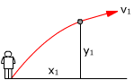 |
$$\left.\begin{array}{l}x_1=v_0\cos\alpha\,t_1\\[6pt] v_{x1}=v_0\cos\alpha\\[6pt] y_1=v_0\operatorname{sen}\alpha\,t_1-\frac{1}{2}\,g\,t_1^2\\[6pt] v_{y1}=v_0\operatorname{sen}\alpha-g\,t_1\end{array}\right\}$$ |
Sustituyendo valores:
$$\begin{aligned}&x_1=100\ \mathrm{\frac{m}{s}}\cos51^\circ\;4\ \mathrm{s}=252\ \mathrm{m}\\[6pt] &y_1=100\ \mathrm{\frac{m}{s}}\operatorname{sen}51^\circ\;4\ \mathrm{s}-\frac{1}{2}\;9{,}8\ \mathrm{\frac{m}{s^2}}\,(4\ \mathrm{s})^2=233\ \mathrm{m}\\[6pt] &\left.\begin{array}{l}v_{x1}=100\ \mathrm{\frac{m}{s}}\cos51^\circ=62{,}9\ \mathrm{\frac{m}{s}}\\[6pt] v_{y1}=100\ \mathrm{\frac{m}{s}}\operatorname{sen}51^\circ-9{,}8\ \mathrm{\frac{m}{s^2}}\;4\ \mathrm{s}=38{,}5\ \mathrm{\frac{m}{s}}\end{array}\right\}\quad\vec{v}_1=\left\{73{,}8\ \mathrm{\frac{m}{s}},\;31{,}5^\circ\right\}\end{aligned}$$
El proyectil está 252 m a la derecha y 233 m por encima del observador. Observa que se sabe donde está pero no el espacio (Longitud de trayectoria) que ha recorrido
Se mueve a 73.8 m/s en dirección 31.5º sobre la horizontal.
Las componentes intrínsecas de la aceleración son las componentes de la aceleración (g) en la dirección de la velocidad (Tangencial) y su perpendicular (Normal)
| 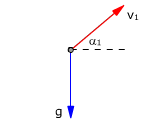 |
Las líneas verdes y rojas son perpendiculares entre si y delimitan ángulos iguales $$\begin{aligned}&a_{n1}=g\cos\alpha_1=9{,}8\ \mathrm{\frac{m}{s^2}}\cos31{,}5^\circ=8{,}4\ \mathrm{\frac{m}{s^2}}\\[6pt] &a_{t1}=g\operatorname{sen}\alpha_1=9{,}8\ \mathrm{\frac{m}{s^2}}\operatorname{sen}31{,}5^\circ=5{,}1\ \mathrm{\frac{m}{s^2}}\end{aligned}$$ El móvil curva su trayectoria y pierde rapidez |
Ecuaciones del movimiento:
| $$\left.\begin{array}{l}x=v_0\cos\alpha\,t\\[6pt] v_x=v_0\cos\alpha\\[6pt] y=v_0\operatorname{sen}\alpha\,t-\frac{1}{2}\,g\,t^2\\[6pt] v_y=v_0\operatorname{sen}\alpha-g\,t\end{array}\right\}$$ |
Parámetros: v0 = 100 m/s, α = 51º g = 9,8 m/s2 |
Aplicación: Se mueve en dirección α2
= 45º sobre la horizontal.
Las componentes de la velocidad en ese momento serán: vx2
= v2·cos α2, vy2 =
v2·sen α2
(v2 incógnita)
 |
$$\left.\begin{array}{l}v_2\cos\alpha_2=v_0\cos\alpha\\[6pt] v_2\operatorname{sen}\alpha_2=v_0\operatorname{sen}\alpha-g\,t_2\end{array}\right\}\;\rightarrow\;\operatorname{tg}\alpha_2=\frac{v_0\operatorname{sen}\alpha-g\,t_2}{v_0\cos\alpha}$$ |
$$\begin{aligned}&t_2=\frac{v_0}{g}\,(\operatorname{sen}\alpha-\cos\alpha\operatorname{tg}\alpha_2)\\[6pt] &t_2=\frac{100\ \mathrm{m/s}}{9{,}8\ \mathrm{m/s^2}}\,(\operatorname{sen}51^\circ-\cos51^\circ\operatorname{tg}45^\circ)=\htmlData{pc-ac=ac4}{\boxed{1{,}51\ \mathrm{s}}}\end{aligned}$$
Ecuaciones del movimiento:
| $$\left.\begin{array}{l}x=v_0\cos\alpha\,t\\[6pt] v_x=v_0\cos\alpha\\[6pt] y=v_0\operatorname{sen}\alpha\,t-\frac{1}{2}\,g\,t^2\\[6pt] v_y=v_0\operatorname{sen}\alpha-g\,t\end{array}\right\}$$ |
Parámetros: v0 = 100 m/s, α = 51º g = 9,8 m/s2 |
Aplicación: Alcanza la altura máxima (La velocidad vertical se anula)
Datos: vy2 = 0, Incógnitas: t2, x2, y2
 |
$$\left.\begin{array}{l}x_3=v_0\cos\alpha\,t_3\\[6pt] y_3=v_0\operatorname{sen}\alpha\,t_3-\frac{1}{2}\,g\,t_3^2\\[6pt] 0=v_0\operatorname{sen}\alpha-g\,t_3\end{array}\right\}\;\htmlData{pc-ac=ac5}{\boxed{x_3=\frac{v_0^2\operatorname{sen}\alpha\cos\alpha}{g},\quad y_3=\frac{(v_0\operatorname{sen}\alpha)^2}{2\,g}}}$$ |
$$\begin{aligned}&x_3=\frac{(100\ \mathrm{m/s})^2\operatorname{sen}51^\circ\cos51^\circ}{9{,}8\ \mathrm{m/s^2}}=\htmlData{pc-ac=ac6}{\boxed{499\ \mathrm{m}}}\\[6pt] &y_3=\frac{(100\ \mathrm{m/s}\operatorname{sen}51^\circ)^2}{2\cdot9{,}8\ \mathrm{m/s^2}}=\htmlData{pc-ac=ac6}{\boxed{308\ \mathrm{m}}}\end{aligned}$$
La altura máxima es de 308 m por encima del observador
y se alcanza 499 m a su derecha.
Ecuaciones del movimiento:
| $$\left.\begin{array}{l}x=v_0\cos\alpha\,t\\[6pt] v_x=v_0\cos\alpha\\[6pt] y=v_0\operatorname{sen}\alpha\,t-\frac{1}{2}\,g\,t^2\\[6pt] v_y=v_0\operatorname{sen}\alpha-g\,t\end{array}\right\}$$ |
Parámetros: v0 = 100 m/s, α = 51º g = 9,8 m/s2 |
Aplicación: El módulo de la velocidad es 75 m/s
Datos: v4 = 75 m/s, Incógnitas: t4, vx4, vy4
$$\begin{aligned}&\left.\begin{array}{l}v_{x4}=v_0\cos\alpha\\[6pt] v_{y4}=v_0\operatorname{sen}\alpha-g\,t_4\\[6pt] v_4^2=v_{x4}^2+v_{y4}^2\end{array}\right\}\;\htmlData{pc-ac=ac7}{\boxed{t_4=\frac{v_0\operatorname{sen}\alpha-\sqrt{v^2-(v_0\cos\alpha)^2}}{g}}}\\[6pt] &t_4=\frac{100\ \mathrm{m/s}\operatorname{sen}51^\circ-\sqrt{(75\ \mathrm{m/s})^2-(100\ \mathrm{m/s}\cos51^\circ)^2}}{9{,}8\ \mathrm{m/s^2}}=\htmlData{pc-ac=ac8}{\boxed{3{,}77\ \mathrm{s}}}\\[6pt] &t_4=\frac{100\ \mathrm{m/s}\operatorname{sen}51^\circ+\sqrt{(75\ \mathrm{m/s})^2-(100\ \mathrm{m/s}\cos51^\circ)^2}}{9{,}8\ \mathrm{m/s^2}}=\htmlData{pc-ac=ac8}{\boxed{12{,}1\ \mathrm{s}}}\end{aligned}$$
Para interpretar las soluciones hay que conocer, en cada caso, los valores de todas las variables
| $$\begin{aligned}&x_4=v_0\cos\alpha\,t_4=100\ \mathrm{\frac{m}{s}}\cos51^\circ\;3{,}77\ \mathrm{s}=238\ \mathrm{m}\\[6pt] &y_4=v_0\operatorname{sen}\alpha\,t_4-\frac{1}{2}\,g\,t_4^2=100\ \mathrm{\frac{m}{s}}\operatorname{sen}51^\circ\;3{,}77\ \mathrm{s}-\frac{1}{2}\;9{,}8\ \mathrm{\frac{m}{s^2}}\,(3{,}77\ \mathrm{s})^2=223\ \mathrm{m}\\[6pt] &v_{y4}=v_0\operatorname{sen}\alpha-g\,t_4=100\ \mathrm{\frac{m}{s}}\operatorname{sen}51^\circ-9{,}8\ \mathrm{\frac{m}{s^2}}\;3{,}77\ \mathrm{s}=40{,}8\ \mathrm{\frac{m}{s}}\end{aligned}$$ El proyectil está 238 m a la derecha del observador, 223 m por encima y subiendo |
 |
Hay dos posiciones donde el módulo de la
velocidad es el mismo. |
Ecuaciones del movimiento:
| $$\left.\begin{array}{l}x=v_0\cos\alpha\,t\\[6pt] v_x=v_0\cos\alpha\\[6pt] y=v_0\operatorname{sen}\alpha\,t-\frac{1}{2}\,g\,t^2\\[6pt] v_y=v_0\operatorname{sen}\alpha-g\,t\end{array}\right\}$$ |
Parámetros: v0 = 100 m/s, α = 51º g = 9,8 m/s2 |
Aplicación:
Datos: y4 = 0, Incógnitas: t4, x4, vx4, vy4
| 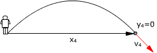 |
$$\begin{aligned}&\left.\begin{array}{l}x_4=v_0\cos\alpha\,t_4\\[6pt] v_{x4}=v_0\cos\alpha\\[6pt] 0=v_0\operatorname{sen}\alpha\,t_4-\frac{1}{2}\,g\,t_4^2\\[6pt] v_{y4}=v_0\operatorname{sen}\alpha-g\,t_4\end{array}\right\}\\[6pt] &\htmlData{pc-ac=ac9}{\boxed{t_4=\frac{2\,v_0\operatorname{sen}\alpha}{g},\quad x_4=\frac{2\,v_0^2\operatorname{sen}\alpha\cos\alpha}{g},\quad v_{y4}=-v_0\operatorname{sen}\alpha}}\end{aligned}$$ |
$$\begin{aligned}&t_4=\frac{2\cdot100\ \mathrm{m/s}\operatorname{sen}51^\circ}{9{,}8\ \mathrm{m/s^2}}=\htmlData{pc-ac=ac4}{\boxed{15{,}9\ \mathrm{s}}}\\[6pt] &x_4=\frac{2\,(100\ \mathrm{m/s})^2\operatorname{sen}51^\circ\cos51^\circ}{9{,}8\ \mathrm{m/s^2}}=\htmlData{pc-ac=ac6}{\boxed{998\ \mathrm{m}}}\\[6pt] &\left.\begin{array}{l}v_{x4}=100\ \mathrm{\frac{m}{s}}\cos51^\circ=62{,}9\ \mathrm{\frac{m}{s}}\\[6pt] v_{y4}=100\ \mathrm{\frac{m}{s}}\operatorname{sen}51^\circ-9{,}8\ \mathrm{\frac{m}{s^2}}\;15{,}9\ \mathrm{s}=-78{,}1\ \mathrm{\frac{m}{s}}\end{array}\right\}\quad\vec{v}_4=\left\{100\ \mathrm{\frac{m}{s}},\;-51^\circ\right\}\end{aligned}$$
El proyectil tarda 15.9 s en volver al suelo y lo hace 998
m a la derecha del observador.
El alcance será: 998 m
Llega al suelo con la misma velocidad que salió y dirección cambiada de signo.
Este resultado no se puede generalizar, la velocidad de llegada al suelo será igual a la de salida solo cuando el proyectil salga del suelo. Lo que si es cierto es que hay simetría en el movimiento vertical: sí se pasa dos veces por la misma altura las velocidades correspondientes serán iguales en módulo y tendrán la dirección cambiada de signo
2Una bola rueda por una
mesa de 1 m de altura y llega al borde con una velocidad de 2 m/s. Hallar:
a)
Posición, velocidad y componentes intrínsecas de la aceleración
a cabo de 0.2 s
b) Cuando
estará moviéndose en dirección 30º bajo la horizontal
c) Donde
estará cuando su velocidad sea de 3 m/s
d)
Tiempo que tarda en llegar al suelo, alcance y velocidad de llegada
Solución
Ecuaciones del movimiento:
| $$\left.\begin{array}{l}x=v_0\,t\\[6pt] v_x=v_0\\[6pt] y=-\frac{1}{2}\,g\,t^2\\[6pt] v_y=-g\,t\end{array}\right\}$$ |
Parámetros: v0 = 2 m/s, g = 9,8 m/s2 |
Aplicación:
Datos: t1 = 0.2 s, Incógnitas: x1, y1, vx1, vy1
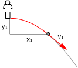 |
$$\left.\begin{array}{l}x_1=v_0\,t_1\\[6pt] v_{x1}=v_0\\[6pt] y_1=-\frac{1}{2}\,g\,t_1^2\\[6pt] v_{y1}=-g\,t_1\end{array}\right\}$$ |
Sustituyendo valores:
$$\begin{aligned}&x_1=2\ \mathrm{\frac{m}{s}}\;0{,}2\ \mathrm{s}=0{,}40\ \mathrm{m}\\[6pt] &y_1=-\frac{1}{2}\;9{,}8\ \mathrm{\frac{m}{s^2}}\,(0{,}2\ \mathrm{s})^2=-0{,}20\ \mathrm{m}\\[6pt] &\left.\begin{array}{l}v_{x1}=2\ \mathrm{\frac{m}{s}}=2\ \mathrm{\frac{m}{s}}\\[6pt] v_{y1}=-9{,}8\ \mathrm{\frac{m}{s^2}}\;0{,}2\ \mathrm{s}=-1{,}96\ \mathrm{\frac{m}{s}}\end{array}\right\}\quad\vec{v}_1=\left\{2{,}80\ \mathrm{\frac{m}{s}},\;-44{,}4^\circ\right\}\end{aligned}$$
La pelota está 0.40 m a la derecha y 0.20 m por debajo del observador. Observa que se sabe donde está pero no el espacio (Longitud de trayectoria) que ha recorrido
Se mueve a 2.8 m/s en dirección 44.4º bajo la horizontal.
Las componentes intrínsecas de la aceleración son las componentes de la aceleración (g) en la dirección de la velocidad (Tangencial) y su perpendicular (Normal)
 | Las líneas verdes y rojas son perpendiculares entre si y delimitan ángulos iguales $$\begin{aligned}&a_{n1}=g\cos\alpha_1=9{,}8\ \mathrm{\frac{m}{s^2}}\cos44{,}4^\circ=7{,}00\ \mathrm{\frac{m}{s^2}}\\[6pt] &a_{t1}=g\operatorname{sen}\alpha_1=9{,}8\ \mathrm{\frac{m}{s^2}}\operatorname{sen}44{,}4^\circ=6{,}86\ \mathrm{\frac{m}{s^2}}\end{aligned}$$ El móvil curva su trayectoria y gana rapidez |
Ecuaciones del movimiento:
| $$\left.\begin{array}{l}x=v_0\,t\\[6pt] v_x=v_0\\[6pt] y=-\frac{1}{2}\,g\,t^2\\[6pt] v_y=-g\,t\end{array}\right\}$$ |
Parámetros: v0 = 2 m/s, g = 9,8 m/s2 |
Aplicación: Se mueve en dirección α2
= 30º bajo la horizontal.
Las componentes de la velocidad en ese momento serán: vx2
= v2·cos α2, vy2 =
-v2·sen α2
(v2 incógnita)
| 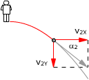 |
$$\left.\begin{array}{l}v_2\cos\alpha_2=v_0\\[6pt] -v_2\operatorname{sen}\alpha_2=-g\,t_2\end{array}\right\}\;\rightarrow\;-\operatorname{tg}\alpha_2=\frac{-g\,t_2}{v_0}$$ |
$$\begin{aligned}&t_2=\frac{v_0\operatorname{tg}\alpha_2}{g}\\[6pt] &t_2=\frac{2\ \mathrm{m/s}\operatorname{tg}30^\circ}{9{,}8\ \mathrm{m/s^2}}=\htmlData{pc-ac=ac4}{\boxed{0{,}12\ \mathrm{s}}}\end{aligned}$$
Ecuaciones del movimiento:
| $$\left.\begin{array}{l}x=v_0\,t\\[6pt] v_x=v_0\\[6pt] y=-\frac{1}{2}\,g\,t^2\\[6pt] v_y=-g\,t\end{array}\right\}$$ |
Parámetros: v0 = 2 m/s, g = 9,8 m/s2 |
Aplicación: El módulo de la velocidad es 3 m/s
Datos: v3 = 3 m/s, Incógnitas: t3, x3, y3, vx3, vy3
$$\left.\begin{array}{l}x_3=v_0\,t_3\\[6pt] v_{x3}=v_0\\[6pt] y_3=-\frac{1}{2}\,g\,t_3^2\\[6pt] v_{y3}=-g\,t_3\\[6pt] v_3=\sqrt{v_{x3}^2+v_{y3}^2}\end{array}\right\}$$ |
$$\begin{aligned}&\htmlData{pc-ac=ac12}{\boxed{x_3=\frac{v_0}{g}\sqrt{v_3^2-v_0^2}\quad,\quad y_3=-\frac{1}{2\,g}\,(v_3^2-v_0^2)}}\\[6pt] &x_3=\frac{2\ \mathrm{m/s}}{9{,}8\ \mathrm{m/s^2}}\sqrt{\left(3\ \mathrm{\frac{m}{s}}\right)^2-\left(2\ \mathrm{\frac{m}{s}}\right)^2}=\htmlData{pc-ac=ac13}{\boxed{0{,}46\ \mathrm{m}}}\\[6pt] &y_3=-\frac{1}{2\cdot9{,}8\ \mathrm{m/s^2}}\left(\left(3\ \mathrm{\frac{m}{s}}\right)^2-\left(2\ \mathrm{\frac{m}{s}}\right)^2\right)=\htmlData{pc-ac=ac14}{\boxed{-0{,}26\ \mathrm{m}}}\end{aligned}$$ |
La pelota estará 0.46 m a la derecha del observador y 0.26 m por debajo
Ecuaciones del movimiento:
| $$\left.\begin{array}{l}x=v_0\,t\\[6pt] v_x=v_0\\[6pt] y=-\frac{1}{2}\,g\,t^2\\[6pt] v_y=-g\,t\end{array}\right\}$$ |
Parámetros: v0 = 2 m/s, g = 9,8 m/s2 |
Aplicación: Llegada al suelo
Datos: y4 = -1 m, Incógnitas: t4, x4, vx4, vy4
|
|
$$\left.\begin{array}{l}x_4=v_0\,t_4\\[6pt] v_{x4}=v_0\\[6pt] y_4=-\frac{1}{2}\,g\,t_4^2\\[6pt] v_{y4}=-g\,t_4\end{array}\right\}\;\htmlData{pc-ac=ac15}{\boxed{\begin{aligned}&t_4=+\sqrt{-\frac{2\,y_4}{g}},\quad x_4=v_0\sqrt{-\frac{2\,y_4}{g}}\\[1ex] &v_{y4}=-\sqrt{-2\,g\,y_4}\end{aligned}}}$$ |

$$\begin{aligned}&t_4=+\sqrt{\frac{-2\,(-1\ \mathrm{m})}{9{,}8\ \mathrm{m/s^2}}}=\htmlData{pc-ac=ac16}{\boxed{0{,}45\ \mathrm{s}}}\\[6pt] &x_4=2\ \mathrm{\frac{m}{s}}\sqrt{\frac{-2\,(-1\ \mathrm{m})}{9{,}8\ \mathrm{m/s^2}}}=\htmlData{pc-ac=ac17}{\boxed{0{,}90\ \mathrm{m}}}\\[6pt] &\left.\begin{array}{l}v_{x4}=2\ \mathrm{\frac{m}{s}}\\[6pt] v_{y4}=-\sqrt{-2\cdot9{,}8\ \mathrm{m/s^2}\,(-1\ \mathrm{m})}=-4{,}43\ \mathrm{\frac{m}{s}}\end{array}\right\}\quad\vec{v}_4=\left\{4{,}87\ \mathrm{\frac{m}{s}},\;-65{,}8^\circ\right\}\end{aligned}$$
La bola tarda 0.45 s en caer al suelo y lo hace 0.90 m a
la derecha del observador.
El alcance será: 0.90 - 0 = 0.90 m
Llega al suelo con velocidad 4.87 m/s en dirección 65.8º bajo la horizontal.
3Desde el tejado de un edificio
de 10 m de alto se lanza una piedra a 5 m/s en dirección 30º
bajo la horizontal. Determina:
a)
Posición, velocidad y componentes intrínsecas de la aceleración
a cabo de 1 s
b) En
que momento su velocidad será 10 m/s
c) Cuando
estará moviéndose en dirección 20º bajo la horizontal
d) Tiempo
que tarda en llegar al suelo, alcance y velocidad de llegada
Solución
Ecuaciones del movimiento:
| $$\left.\begin{array}{l}x=v_0\cos\alpha\,t\\[6pt] v_x=v_0\cos\alpha\\[6pt] y=-v_0\operatorname{sen}\alpha\,t-\frac{1}{2}\,g\,t^2\\[6pt] v_y=-v_0\operatorname{sen}\alpha-g\,t\end{array}\right\}$$ |
Parámetros: v0 = 5 m/s, α = 30º g = 9,8 m/s2 |
Aplicación:
Datos: t1 = 1 s, Incógnitas: x1, y1, vx1, vy1
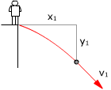 |
$$\left.\begin{array}{l}x_1=v_0\cos\alpha\,t_1\\[6pt] v_{x1}=v_0\cos\alpha\\[6pt] y_1=-v_0\operatorname{sen}\alpha\,t_1-\frac{1}{2}\,g\,t_1^2\\[6pt] v_{y1}=-v_0\operatorname{sen}\alpha-g\,t_1\end{array}\right\}$$ |
Sustituyendo valores
$$\begin{aligned}&x_1=5\ \mathrm{\frac{m}{s}}\cos30^\circ\;1\ \mathrm{s}=4{,}33\ \mathrm{m}\\[6pt] &y_1=-5\ \mathrm{\frac{m}{s}}\operatorname{sen}30^\circ\;1\ \mathrm{s}-\frac{1}{2}\;9{,}8\ \mathrm{\frac{m}{s^2}}\,(1\ \mathrm{s})^2=-7{,}40\ \mathrm{m}\\[6pt] &\left.\begin{array}{l}v_{x1}=5\ \mathrm{\frac{m}{s}}\cos30^\circ=4{,}33\ \mathrm{\frac{m}{s}}\\[6pt] v_{y1}=-5\ \mathrm{\frac{m}{s}}\operatorname{sen}30^\circ-9{,}8\ \mathrm{\frac{m}{s^2}}\;1\ \mathrm{s}=-12{,}3\ \mathrm{\frac{m}{s}}\end{array}\right\}\quad\vec{v}_1=\left\{13{,}0\ \mathrm{\frac{m}{s}},\;-70{,}5^\circ\right\}\end{aligned}$$
La piedra está 4.33 m a la derecha y 7.40 m por debajo del observador. Observa que se sabe donde está pero no el espacio (Longitud de trayectoria) que ha recorrido
Se mueve a 13 m/s en dirección 70.5º bajo la horizontal
Las componentes intrínsecas de la aceleración son las componentes de la aceleración (g) en la dirección de la velocidad (Tangencial) y su perpendicular (Normal)
|
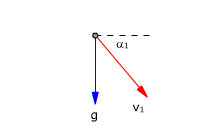 | Las líneas verdes y rojas son perpendiculares entre si y delimitan ángulos iguales $$\begin{aligned}&a_{n1}=g\cos\alpha_1=9{,}8\ \mathrm{\frac{m}{s^2}}\cos70{,}5^\circ=3{,}27\ \mathrm{\frac{m}{s^2}}\\[6pt] &a_{t1}=g\operatorname{sen}\alpha_1=9{,}8\ \mathrm{\frac{m}{s^2}}\operatorname{sen}70{,}5^\circ=9{,}24\ \mathrm{\frac{m}{s^2}}\end{aligned}$$ El móvil curva su trayectoria y gana rápidez |

Ecuaciones del movimiento:
| $$\left.\begin{array}{l}x=v_0\cos\alpha\,t\\[6pt] v_x=v_0\cos\alpha\\[6pt] y=-v_0\operatorname{sen}\alpha\,t-\frac{1}{2}\,g\,t^2\\[6pt] v_y=-v_0\operatorname{sen}\alpha-g\,t\end{array}\right\}$$ |
Parámetros: v0 = 5 m/s, α = 30º g = 9,8 m/s2 |
Aplicación: El módulo de la velocidad es 10 m/s
Datos: v2 = 10 m/s, Incógnitas: t2, vx2, vy2
$$\begin{aligned}&\left.\begin{array}{l}v_{x2}=v_0\cos\alpha\\[6pt] v_{y2}=-v_0\operatorname{sen}\alpha-g\,t_2\\[6pt] v_2^2=v_{x2}^2+v_{y2}^2\end{array}\right\}\;\htmlData{pc-ac=ac19}{\boxed{t_2=\frac{-v_0\operatorname{sen}\alpha-\sqrt{v_2^2-(v_0\cos\alpha)^2}}{g}}}\\[6pt] &t_2=\frac{-5\ \mathrm{m/s}\operatorname{sen}30^\circ-\sqrt{(10\ \mathrm{m/s})^2-(5\cos30^\circ\ \mathrm{m/s})^2}}{9{,}8\ \mathrm{m/s^2}}=-1{,}17\quad\text{No}\\[6pt] &t_2=\frac{-5\ \mathrm{m/s}\operatorname{sen}30^\circ+\sqrt{(10\ \mathrm{m/s})^2-(5\cos30^\circ\ \mathrm{m/s})^2}}{9{,}8\ \mathrm{m/s^2}}=\htmlData{pc-ac=ac8}{\boxed{0{,}665\ \mathrm{s}}}\end{aligned}$$
La velocidad es de 10 m/s una sola vez, a los 1.17 s de empezar el movimiento
Ecuaciones del movimiento
$$\left.\begin{array}{l}x=v_0\cos\alpha\,t\\[6pt] v_x=v_0\cos\alpha\\[6pt] y=-v_0\operatorname{sen}\alpha\,t-\frac{1}{2}\,g\,t^2\\[6pt] v_y=-v_0\operatorname{sen}\alpha-g\,t\end{array}\right\}$$ |
Parámetros: v0 = 5 m/s, α = 30º g = 9,8 m/s2 |
Aplicación: Se mueve en dirección α3
= 30º sobre la horizontal.
Las componentes de la velocidad en ese momento serán: vx3
= v3·cos α3, vy3 =
v3·cos α3
(v3 incógnita)
| 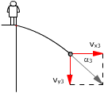 |
$$\left.\begin{array}{l}v_3\cos\alpha_3=v_0\cos\alpha\\[6pt] -v_3\operatorname{sen}\alpha_3=-v_0\operatorname{sen}\alpha-g\,t_3\end{array}\right\}\;\rightarrow\;\operatorname{tg}\alpha_3=\frac{v_0\operatorname{sen}\alpha+g\,t_3}{v_0\cos\alpha}$$ |
$$\begin{aligned}&t_3=\frac{v_0}{g}\,(\cos\alpha\operatorname{tg}\alpha_3-\operatorname{sen}\alpha)\\[6pt] &t_3=\frac{5\ \mathrm{m/s}}{9{,}8\ \mathrm{m/s^2}}\,(\cos30^\circ\operatorname{tg}20^\circ-\operatorname{sen}30^\circ)=-0{,}09\quad\text{No}\end{aligned}$$
Nunca la velocidad apuntará 20º por debajo de
la horizontal.
La razón es evidente: en un tiro la inclinación de la velocidad
siempre va disminuyendo y este movimiento empieza con la velocidad formando
30º por debajo de la horizontal...
Ecuaciones del movimiento
$$\left.\begin{array}{l}x=v_0\cos\alpha\,t\\[6pt] v_x=v_0\cos\alpha\\[6pt] y=-v_0\operatorname{sen}\alpha\,t-\frac{1}{2}\,g\,t^2\\[6pt] v_y=-v_0\operatorname{sen}\alpha-g\,t\end{array}\right\}$$ |
Parámetros: v0 = 5m/s, α = 30º g = 9,8 m/s2 |
Aplicación:
Datos: y4 = -10 m, Incógnitas: t4, x4, vx4, vy4
| 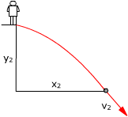 |
$$\left.\begin{array}{l}x_2=v_0\cos\alpha\,t_2\\[6pt] v_{x2}=v_0\cos\alpha\\[6pt] y_2=-v_0\operatorname{sen}\alpha\,t_2-\frac{1}{2}\,g\,t_2^2\\[6pt] v_{y2}=-v_0\operatorname{sen}\alpha-g\,t_2\end{array}\right\}\;\htmlData{pc-ac=ac20}{\boxed{\begin{aligned}&t_2=\frac{v_0\operatorname{sen}\alpha}{g}\left(-1+\sqrt{1-\frac{2\,g\,y_2}{(v_0\operatorname{sen}\alpha)^2}}\right)\\[1ex] &x_2=\frac{v_0^2\operatorname{sen}\alpha\cos\alpha}{g}\left(-1+\sqrt{1-\frac{2\,g\,y_2}{(v_0\operatorname{sen}\alpha)^2}}\right)\\[1ex] &v_{y2}=-v_0\operatorname{sen}\alpha\sqrt{1-\frac{2\,g\,y_2}{(v_0\operatorname{sen}\alpha)^2}}\end{aligned}}}$$ |
$$\begin{aligned}&t_2=\frac{5\ \mathrm{m/s}\operatorname{sen}30^\circ}{9{,}8\ \mathrm{m/s^2}}\left(-1+\sqrt{1-\frac{2\cdot9{,}8\ \mathrm{m/s^2}\,(-10\ \mathrm{m})}{(5\ \mathrm{m/s}\operatorname{sen}30^\circ)^2}}\right)=\htmlData{pc-ac=ac22}{\boxed{1{,}20\ \mathrm{s}}}\\[6pt] &x_2=\frac{(5\ \mathrm{m/s})^2\operatorname{sen}30^\circ\cos30^\circ}{9{,}8\ \mathrm{m/s^2}}\left(-1+\sqrt{1-\frac{2\cdot9{,}8\ \mathrm{m/s^2}\,(-10\ \mathrm{m})}{(5\ \mathrm{m/s}\operatorname{sen}30^\circ)^2}}\right)=\htmlData{pc-ac=ac23}{\boxed{5{,}18\ \mathrm{m}}}\\[6pt] &\left.\begin{array}{l}v_{x2}=5\ \mathrm{\frac{m}{s}}\cos30^\circ=4{,}33\ \mathrm{\frac{m}{s}}\\[6pt] v_{y2}=-5\ \mathrm{\frac{m}{s}}\operatorname{sen}30^\circ\sqrt{1-\frac{2\cdot9{,}8\ \mathrm{m/s^2}\,(-10\ \mathrm{m})}{(5\ \mathrm{m/s}\operatorname{sen}30^\circ)^2}}=-14{,}2\ \mathrm{\frac{m}{s}}\end{array}\right\}\quad\vec{v}_2=\left\{14{,}8\ \mathrm{\frac{m}{s}},\;-73{,}0^\circ\right\}\end{aligned}$$
La piedra tarda 1.20 s en llegar al suelo y lo hace a 5,18 m a la derecha del observador. El alcance será 5.18 m
La piedra llega al suelo moviéndose a 14.8 m/s en dirección 73º bajo la horizontal
 |
Plantea las ecuaciones del tiro visto por un observador colocado en A, B, C o D Datos: v0 = 250 m/s, α = 40º
|
Solución
|
A)
|


|
B)
|
|
C)
|
|
D)
|
 |
Una pelota gira en
un plano vertical, unida a una cuerda de 5 m de largo, rozando el
suelo en el punto más bajo de su trayectoria. |
Solución
Ecuaciones del movimiento:
| $$\left.\begin{array}{l}x=v_0\operatorname{sen}\alpha\,t\\[6pt] v_x=v_0\operatorname{sen}\alpha\\[6pt] y=v_0\cos\alpha\,t-\frac{1}{2}\,g\,t^2\\[6pt] v_y=v_0\cos\alpha-g\,t\end{array}\right\}$$ |
Parámetros: v0 = 20 m/s, α = 40º g = 9,8 m/s2 |
Aplicación: Llegada al suelo
Datos: |
$$y_1=-R\,(1-\operatorname{sen}\alpha)$$ |
Incógnitas: x1, t1 |
 |
$$\begin{aligned}&\left.\begin{array}{l}x_1=v_0\operatorname{sen}\alpha\,t_1\\[6pt] y_1=v_0\cos\alpha\,t_1-\frac{1}{2}\,g\,t_1^2\end{array}\right\}\\[6pt] &\htmlData{pc-ac=ac24}{\boxed{x_1=\frac{v_0^2\operatorname{sen}\alpha\cos\alpha}{g}\left(1+\sqrt{1-\frac{2\,g\,y_1}{(v_0\cos\alpha)^2}}\right)}}\end{aligned}$$ |
Sustituyendo el valor de y:
$$\begin{aligned}&x_1=\frac{v_0^2\operatorname{sen}\alpha\cos\alpha}{g}\left(1+\sqrt{1-\frac{2\,g\,\left(-R\,(1-\operatorname{sen}\alpha)\right)}{(v_0\cos\alpha)^2}}\right)=\frac{v_0^2\operatorname{sen}\alpha\cos\alpha}{g}\left(1+\sqrt{1+\frac{2\,g\,R\,(1-\operatorname{sen}\alpha)}{(v_0\cos\alpha)^2}}\right)\\[6pt] &x_1=\frac{(20\ \mathrm{m/s})^2\operatorname{sen}40^\circ\cos40^\circ}{9{,}8\ \mathrm{m/s^2}}\left(1+\sqrt{1+\frac{2\;9{,}8\ \mathrm{m/s^2}\;5\ \mathrm{m}\,(1-\operatorname{sen}40^\circ)}{(20\ \mathrm{m/s}\cos40^\circ)^2}}\right)=\htmlData{pc-ac=ac26}{\boxed{41{,}6\ \mathrm{m}}}\end{aligned}$$
6Un avión que vuela horizontalmente a 200 m/s deja caer una bomba desde un altura de 1900 m. Calcula cuanto tardará en llegar al suelo, alcance y velocidad de llegada
Solución
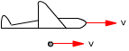 |
Aunque la bomba se deje caer tiene la misma velocidad que el avión que la transporta |
Ecuaciones del movimiento:
| $$\left.\begin{array}{l}x=v_0\,t\\[6pt] v_x=v_0\\[6pt] y=-\frac{1}{2}\,g\,t^2\\[6pt] v_y=-g\,t\end{array}\right\}$$ |
Parámetros: v0 = 200 m/s g = 9,8 m/s2 |
Aplicación: Llegada al suelo
Datos: y1 = -1900 m, Incógnitas: t1, x1, vx1, vy1
| 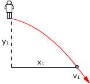 |
$$\left.\begin{array}{l}x_1=v_0\,t_1\\[6pt] v_{x1}=v_0\\[6pt] y_1=-\frac{1}{2}\,g\,t_1^2\\[6pt] v_{y1}=-g\,t_1\end{array}\right\}\;\htmlData{pc-ac=ac29}{\boxed{\begin{aligned}&t_1=+\sqrt{-\frac{2\,y_1}{g}},\quad x_1=v_0\sqrt{-\frac{2\,y_1}{g}}\\[1ex] &v_{y1}=-\sqrt{-2\,y_1\,g}\end{aligned}}}$$ |
Sustituyendo valores:
$$\begin{aligned}&t_1=\sqrt{-\frac{2\,(-1900\ \mathrm{m})}{9{,}8\ \mathrm{m/s^2}}}=\htmlData{pc-ac=ac16}{\boxed{19{,}7\ \mathrm{s}}}\\[6pt] &x_1=200\ \mathrm{\frac{m}{s}}\sqrt{-\frac{2\,(-1900\ \mathrm{m})}{9{,}8\ \mathrm{m/s^2}}}=\htmlData{pc-ac=ac17}{\boxed{3938\ \mathrm{m}}}\\[6pt] &\left.\begin{array}{l}v_{x1}=200\ \mathrm{\frac{m}{s}}\\[6pt] v_{y1}=-\sqrt{-2\,(-1900\ \mathrm{m})\;9{,}8\ \mathrm{\frac{m}{s^2}}}=-193\ \mathrm{\frac{m}{s}}\end{array}\right\}\quad\vec{v}_1=\left\{278\ \mathrm{\frac{m}{s}},\;-44{,}0^\circ\right\}\end{aligned}$$
La bomba tarda 19.7 s en caer al suelo y lo hace 3938 m a la derecha del observador. El alcance será: 3938 - 0 = 3938 m
Llega al suelo con velocidad 278 m/s en dirección 44º bajo la horizontal
7Desde un ultraligero que vuela a 24 m de altura con una velocidad horizontal de 5 m/s se lanza hacia abajo una piedra a 3 m/s. Determina el alcance y la velocidad de llegada
Solución
 |
La piedra tiene la velocidad horizontal del avión que la transportaba y además la velocidad vertical con que se lanza |
Ecuaciones del movimiento:
| $$\left.\begin{array}{l}x=v'_0\,t\\[6pt] v_x=v'_0\\[6pt] y=-v_0\,t-\frac{1}{2}\,g\,t^2\\[6pt] v_y=-v_0-g\,t\end{array}\right\}$$ |
Parámetros: v0 = 3 m/s, v'0 = 5 m/s g = 9,8 m/s2 |
Aplicación: Llegada al suelo
Datos: y1 = -24 m, Incógnitas: t1, x1, vx1, vy1
|
|
$$\left.\begin{array}{l}x_1=v'_0\,t_1\\[6pt] v_{x1}=v'_0\\[6pt] y_1=-v_0\,t_1-\frac{1}{2}\,g\,t_1^2\\[6pt] v_{y1}=-v_0-g\,t_1\end{array}\right\}\;\htmlData{pc-ac=ac30}{\boxed{\begin{aligned}&x_1=\frac{v_0\,v'_0}{g}\left(-1+\sqrt{1-\frac{2\,g\,y}{v_0^2}}\right)\\[1ex] &v_{y1}=-v'_0\sqrt{1-\frac{2\,g\,y}{v_0^2}}\end{aligned}}}$$ |

$$\begin{aligned}&x_1=\frac{3\ \mathrm{m/s}\;5\ \mathrm{m/s}}{9{,}8\ \mathrm{m/s^2}}\left(-1+\sqrt{1-\frac{2\cdot9{,}8\ \mathrm{m/s^2}\,(-24\ \mathrm{m})}{(3\ \mathrm{m/s})^2}}\right)=\htmlData{pc-ac=ac32}{\boxed{9{,}6\ \mathrm{m}}}\\[6pt] &\left.\begin{array}{l}v_{x1}=5\ \mathrm{\frac{m}{s}}\\[6pt] v_{y1}=-\sqrt{\left(3\ \mathrm{\frac{m}{s}}\right)^2-2\cdot9{,}8\ \mathrm{\frac{m}{s^2}}\,(-24\ \mathrm{m})}=-21{,}9\ \mathrm{\frac{m}{s}}\end{array}\right\}\quad\vec{v}_1=\left\{22{,}4\ \mathrm{\frac{m}{s}},\;-77{,}1^\circ\right\}\end{aligned}$$
La piedra llega al suelo 9,6 m a la derecha del observador.
El alcance será: 9,6 - 0 = 9,6 m
Llega al suelo con velocidad 22.4 m/s en dirección 77.1º bajo la horizontal
 |
Un cañón, que está colocado al pie de una rampa de ángulo φ, dispara un proyectil con velocidad v0 formando ángulo α con la rampa. Determina a qué distancia del cañón chocara con la rampa (Alcance) |
Solución
Ecuaciones del movimiento:
| $$\left.\begin{array}{l}x=v_0\cos\beta\,t\\[6pt] v_x=v_0\cos\beta\\[6pt] y=v_0\operatorname{sen}\beta\,t-\frac{1}{2}\,g\,t^2\\[6pt] v_y=v_0\operatorname{sen}\beta-g\,t\end{array}\right\}$$ |
Parámetros: v0 , β = α + φ , g |
Aplicación: El proyectil impacta en la rampa
Datos: y1 / x1 = tg φ , Incógnitas: t1, x1, y1
 |
$$\left.\begin{array}{l}x_1=v_0\cos\beta\,t_1\\[6pt] y_1=v_0\operatorname{sen}\beta\,t_1-\frac{1}{2}\,g\,t_1^2\\[6pt] \operatorname{tg}\varphi=\frac{y_1}{x_1}\end{array}\right\}\;\htmlData{pc-ac=ac34}{\boxed{x_1=\frac{2\,(v_0\cos\beta)^2}{g}\,(\operatorname{tg}\beta-\operatorname{tg}\varphi)}}$$ |
No hemos acabado, el problema pide la distancia L del punto de partida al punto de impacto:
 |
$$\begin{aligned}&L=\frac{x_1}{\cos\varphi}=\frac{\left(2\,(v_0\cos\beta)^2\,(\operatorname{tg}\beta-\operatorname{tg}\varphi)/g\right)}{\cos\varphi}\\[6pt] &L=\frac{2\,v_0^2}{g}\,\frac{\cos\beta\,(\operatorname{sen}\beta-\operatorname{tg}\varphi\cos\beta)}{\cos\varphi}\end{aligned}$$ |
Sustituyendo el valor de β y operando con soltura resulta:
$$L=\frac{2\,v_0^2}{g}\,\htmlData{pc-ac=ac35}{\boxed{\frac{\operatorname{sen}\alpha\cos\alpha-\operatorname{sen}^2\alpha\operatorname{tg}\varphi}{\cos\varphi}}}$$
Ecuaciones del movimiento:
| $$\left.\begin{array}{l}x=v_0\cos\alpha\,t-\frac{1}{2}\,g\operatorname{sen}\varphi\,t^2\\[6pt] v_x=v_0\cos\alpha-g\operatorname{sen}\varphi\,t\\[6pt] y=v_0\operatorname{sen}\alpha\,t-\frac{1}{2}\,g\cos\varphi\,t^2\\[6pt] v_y=v_0\operatorname{sen}\alpha-g\cos\varphi\,t\end{array}\right\}$$ |
Parámetros: v0, α , φ , g |
Aplicación: El proyectil impacta en la ladera
Datos: y1 = 0, Incógnitas: t1, x1, y1
 |
$$\left.\begin{array}{l}x_1=v_0\cos\alpha\,t_1-\frac{1}{2}\,g\operatorname{sen}\varphi\,t_1^2\\[6pt] 0=v_0\operatorname{sen}\alpha\,t_1-\frac{1}{2}\,g\cos\varphi\,t_1^2\end{array}\right\}\;\htmlData{pc-ac=ac38}{\boxed{x_1=\frac{2\,v_0^2\operatorname{sen}\alpha}{g\cos\varphi}\,(\cos\alpha-\operatorname{sen}\alpha\operatorname{tg}\varphi)}}$$ |
Ahora x1 es la distancia del punto de partida al punto de impacto
9Desde un globo que asciende con velocidad de 3 m/s se lanza horizontalmente una piedra a 4 m/s. Sabiendo que en el momento del lanzamiento el globo estaba a 24 m de altura sobre el suelo. Determina el alcance y la velocidad de llegada al suelo
Solución
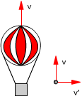 |
La piedra tiene la velocidad vertical del globo que la transportaba y además la velocidad horizontal |
Ecuaciones del movimiento:
| $$\left.\begin{array}{l}x=v'_0\,t\\[6pt] v_x=v'_0\\[6pt] y=v_0\,t-\frac{1}{2}\,g\,t^2\\[6pt] v_y=v_0-g\,t\end{array}\right\}$$ |
Parámetros: v0 = 3 m/s, v'0 = 4 m/s g = 9,8 m/s2 |
Aplicación: Llegada al suelo
Datos: y1 = -24 m, Incógnitas: t1, x1, vx1, vy1
| 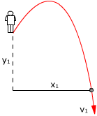 |
$$\left.\begin{array}{l}x_1=v'_0\,t_1\\[6pt] v_{x1}=v'_0\\[6pt] y_1=v_0\,t_1-\frac{1}{2}\,g\,t_1^2\\[6pt] v_{y1}=v_0-g\,t_1\end{array}\right\}\;\htmlData{pc-ac=ac41}{\boxed{x_1=\frac{v_0\,v'_0}{g}\left(1+\sqrt{1-\frac{2\,g\,y}{v_0^2}}\right),\quad v_y=-\sqrt{v_0^2-2\,g\,y}}}$$ |
$$\begin{aligned}&x_1=\frac{3\ \mathrm{m/s}\;4\ \mathrm{m/s}}{9{,}8\ \mathrm{m/s^2}}\left(1+\sqrt{1-\frac{2\cdot9{,}8\ \mathrm{m/s^2}\,(-24\ \mathrm{m})}{(3\ \mathrm{m/s})^2}}\right)=\htmlData{pc-ac=ac32}{\boxed{10{,}1\ \mathrm{m}}}\\[6pt] &\left.\begin{array}{l}v_{x1}=4\ \mathrm{\frac{m}{s}}\\[6pt] v_{y1}=-\sqrt{\left(3\ \mathrm{\frac{m}{s}}\right)^2-2\cdot9{,}8\ \mathrm{\frac{m}{s^2}}\,(-24\ \mathrm{m})}=-21{,}9\ \mathrm{\frac{m}{s}}\end{array}\right\}\quad\vec{v}_1=\left\{22{,}3\ \mathrm{\frac{m}{s}},\;-79{,}6^\circ\right\}\end{aligned}$$
La piedra llega al suelo 10.1 m a la derecha del observador. El alcance será: 10,1 m
Llega al suelo con velocidad 21.9 m/s en dirección 79.6º bajo la horizontal
 |
Un cañón, que está colocado en la ladera de un monte de inclinación φ, dispara un proyectil con velocidad v0 en dirección perpendicular a la ladera. Determina el alcance del proyectil |
Solución
Ecuaciones del movimiento:
| $$\left.\begin{array}{l}x=-\frac{1}{2}\,g\operatorname{sen}\varphi\,t^2\\[6pt] v_x=-g\operatorname{sen}\varphi\,t\\[6pt] y=v_0\,t-\frac{1}{2}\,g\cos\varphi\,t^2\\[6pt] v_y=v_0-g\cos\varphi\,t\end{array}\right\}$$ |
Parámetros: v0 , φ , g |
Aplicación: El proyectil impacta en la ladera
Datos: y1 = 0 , Incógnitas: t1, x1
 |
$$\left.\begin{array}{l}x_1=-\frac{1}{2}\,g\operatorname{sen}\varphi\,t_1^2\\[6pt] 0=v_0\,t_1-\frac{1}{2}\,g\cos\varphi\,t_1^2\end{array}\right\}\;\htmlData{pc-ac=ac44}{\boxed{x_1=-\frac{2\,v_0^2\operatorname{tg}\varphi}{g\cos\varphi}}}$$ |
El alcance es una distancia y por tanto debe darse sin signo, así que: